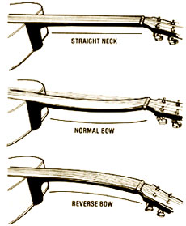
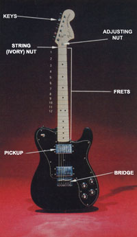
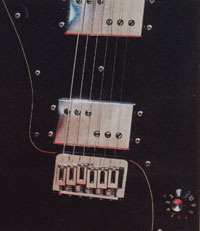
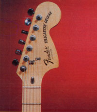
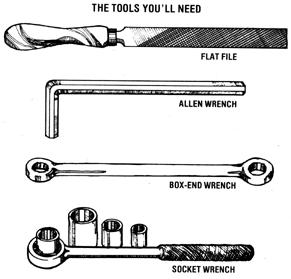

All that it takes is some time and patience-and a bit of skill-to make a winner out of . . .
I've made the better part of my income for over 20 years-by playing guitar in country bands. And, not long ago, I had to leave my regular instrument at the repair shop for a complete fret transplant, a job that would take several weeks. Doing so could have presented a problem, too-since I play two or three nights a week-if I hadn't happened to have a spare guitar on hand, a no-name brand that I'd picked up at a garage sale for $5.00.
When I made that purchase, though, I honestly wondered whether I might be paying $4.00 too much! The poor thing looked like it had been used for killing rats. Its neck was broken, the tremolo bar was snapped off, and a couple of keys were missing . . . and that was only the most visible damage. But-perhaps more out of pity than in any hope that I could actually resurrect the guitar-I gathered it up and took it home. I repaired and straightened the neck . . . replaced the ivory nut . . . lowered the bridge . . . put on some keys "borrowed" from another scrap instrument . . . shaved the frets . . . dressed the garage sale special up with a new set of strings . . . and darned if the junket didn't play better than my $600 guitar!
At first I took a lot of ribbing about my "bargain basement axe", but I used it on gigs within a month, and it earned me $475. That's not a bad return on a $5.00 investment in anybody's book . . . and the kidding soon stopped.
There's no reason why you can't restore a flea market bargain, too-for your own use, or even for resale-if you're at least moderately handy with tools, have some time, and know how to play the guitar. [EDITOR'S NOTE: For an introduction to playing that instrument, see No. 72, page 154.] All you'll be doing, to put it simply, is finding a suitable "fixer" and setting it up so that it'll play easily. You might well be surprised to learn how vital this setup is. In fact, probably the No. 1 reason new guitarists stop playing is that they find it just too much of a struggle to push the strings down to the fingerboard when noting or chording. Many novices give up after a few months . . . without ever knowing what a properly setup guitar feels like.
An electric guitar face-on, showing the basic parts that'll need to be checked and (possibly) repaired
FINDING YOUR FIXER
Since most do-it-yourselfers are inveterate bargain hunters, you may already know that there are stacks of used guitars gathering dust at flea markets, garage sales, and pawn shops . . . many of which can be purchased for just a few dollars. True, most of them are junk, but if you know what to look for, it's not hard to find one that-with time and effort-can be transformed into a good-sounding, easy-playing instrument.
Most such used models will be solid-body electrics. Although you may find acoustic guitars at sale outlets, they'll rarely be good, restorable instruments. The chances are also slim that you'll luck into a big-name model of either guitar type. (It does happen, though: A fellow band member recently bought a valuable vintage Gretsch for $30 and a classic Fender bass for $25.) Today, however, even inexpensive guitars are better made than they used to be . . . so be sure to check out any possible purchases on an individual basis rather than simply go by "name".
"Action", or the distance between the strings and the fingerboard, will be the major problem with most used guitars: It's almost invariably set too high for any but the most iron-fingered individuals. This adjustment is made, often deliberately, at the factory . . . to allow leeway for uneven frets, improperly aligned necks, and other such flaws. Even expensive guitars often suffer this malady, although it'll likely be less pronounced than in bargain instruments. (There are pickers who find that high strings suit their particular style, but these folks are definitely exceptions.) For playing ease, the first string should be a bit less than 1/16" up (measuring to the top of the twelfth fret) and the sixth string at 1/16".
Don't despair if the instrument you find has strings a half-inch off the fingerboard and a neck with a bow that could launch an arrow . . . the guitar can. probably be fixed! If the strings are too high, sight down the fingerboard to see whether the neck is noticeably bowed. (This isn't a very reliable test when that component is almost right, but can be used to check one that's flagrantly out of line.) Should your find have a bad bend, look on the peghead-just in front of the ivory nut-to see if the neck has an adjustable truss rod in it. If it does, there'll be a nut inside, probably covered with a plastic plate. (In a few models this will take the form of a large screwhead on the butt end of the neck where it joins the body.) An instrument without one of these "warp tuners" can't be straightened . . . and you'll have to look for another guitar.
In this close-up of the bridge area, notice how each string on this model has its own adjusting screw.
CHECKING IT OUT
Assuming that the neck is straight-or has a rod to allow you to make the required adjustment-give the rest of the guitar a onceover. Check for missing keys, key gears, or pickup . . . a cracked neck . . . broken or lost frets, etc. However, don't give up right away on a damaged item: Remember that many times you can combine parts from other bargain guitars in order to make repairs. Furthermore, parts are available from music stores (which are, of course, the most expensive sources) or mail order houses (I've had good luck with Freeport Music, Dept. TMEN, 144 Wolf Hill Road, Melville, New York 11747).
If you're interested in an electric instrument, you will, of course, have to plug it into an amplifier to find out whether it works. (Your best bet is to bring an amp with you and test your discoveries.) There's really not very much that can go wrong with a guitar's electrical system unless it's been tampered with. You might, however, want to look for marred screw slots on the plate that covers the wiring, since they'd indicate that someone had been messing around with the instrument's innards. In fact (especially if you can't bring an amp to test the guitar), you'd be smart to carry a set of small screwdrivers . . . then, when things look suspicious, ask the owner's permission to remove the plate and look inside. If you don't find any wire ends poking out, everything's probably intact. Don't, though, reject a guitar simply because a wire is loose. After all, it's entirely possible that the connection can simply be soldered. (My $5.00 guitar, for example, wouldn't utter a twang until I hooked up a wire that had shaken loose from the main volume control.)
After checking things out, you'll have to make a decision . . . taking into account the price of the guitar, the cost (and effort) involved in making repairs and/or adjustments, and the degree of confidence you have in your abilities as a handyperson. (And, of course, even if you don't feel you want to tackle the job, you might want to buy an especially lowcost instrument for parts.)
Here's a view of the head showing the turning keys, the adjusting nut (knob), and the ivory nut, which spaces the strings, directly underneath.
FIXING YOUR FIND
Let's say that you've found a likely candidate for your ministrations. The tools and materials you'll need are few and inexpensive . . . consisting primarily of small screwdrivers, allen wrenches, sockets, glue, and shims. If you're going to work on the frets, you'll also have to gather files, No. 400 or No. 600 sandpaper, and 0000-grade steel wool. And finally, you'll need access to a pitchpipe, piano, or other device for tuning.
First, make sure the guitar is adjusted to close to standard concert pitch, then check the neck again for warp. If there's a bad bow in it, lay the instrument on papers or a blanket to protect its back, loosen the strings, and remove the plate that covers the adjusting nut.
At this point you'll have to select a tool that'll fit whichever of the several possible nut sizes and designs your guitar uses. It'll probably have [1] a hex nut that requires a socket or box-end wrench, [2] an allen-head nut, [3] a nut with a series of holes in its side which is turned with the aid of a screwdriver, nail, or whatever, or [4] a large screwhead on the butt end of the neck (this, incidentally, is an uncommon design).
Once you've got the right tool for the job, you'll need to turn the nut to correct the neck bow. If the component has a normal (curving downward) arc in it, turn the nut clockwise. To correct a reverse bow (which is unusual), adjust the nut counterclockwise. Go slowly . . . working in eighth- to quarter-inch increments. Then, after each turn, give the instrument a five-minute rest to allow it to accommodate the new stress, and sight down the neck to see whether the bow has flattened out sufficiently. If not, give the adjusting nut another small turn and sight again. Keep this up until the neck appears straight or has a very slight reverse bend. (The latter should straighten out when the strings are retensioned.)
With that done, you'll be ready for a trial run. Fit all the strings back into their slots in the bridge and nut, and tune up to concert pitch again. If the neck still looks all right, fret each string up and down the neck. Should you encounter no buzzes or dead strings, you'll be well on your way to having a good bargain guitar. However, if the strings are still too high or if there are dead spots or rattles, you've got more work to do.
First, we'll deal with the problem of too-high strings. With the neck warp taken out, the trouble is likely to be in the bridge or the ivory nut (or both). If the former component is adjustable for height, turn the regulating wheels counterclockwise to lower it. Often this won't cause it to drop far enough, though, in which case the bridge will have to be taken apart and just the top portion used . . . with cardboard or wooden shims placed beneath it to lift it to the correct height. On an acoustic guitar there's usually a plastic or bone saddle that the strings pass over. To lower one of these, you'll have to take it out and file off some of the saddle's bottom (the best way) or top. (If you attempt the latter, be sure to try to keep the original curved shape.)
Now, turn to the other end of the guitar. After passing through the ivory nut's slots, the strings should just barely clear the first fret. It's tough to deepen these grooves . . . although it can be done with patience and a folded sheet of fine sandpaper. However, the best bet is to take the nut out and trim the bottom until it's low enough. If you file it down too much, of course, you'll have to shim it up and then glue the pieces in place.
With the nut and bridge both set at the right height and the strings at a comfortable playing distance from the fingerboard, it's time to check again for buzzing or dead spots. Fret by fret, play each string up the neck. When you come to a note that rattles, check the other strings at the same position to see if they're okay. Usually you'll find that just one string hits a high fret at any one position. If more do, though, it's best to loosen several strings and get them out of the way-perhaps by setting them in the outermost slots of the nut-before starting to file down the high fret.
When, as is more often the case, you find just one string rattling, loosen it and one or two neighboring strings and simply hold them out of the way while you dress down the fret (the noisy one will likely be directly above the one you were using when you heard the rattle). Don't do any final sanding or polishing until you retune and test the string, though. You'll often find that the next fret up (being now slightly higher compared with the others) will have developed a buzz of its own . . . however, it probably won't take as much filing as did the first high spot.
FUSSING OVER FRETS
Continue the testing and filing process, moving up the neck on the single string, until you get out all the rattles. If there appear to be too many problem frets, however, you may have to consider raising the bridge or relaxing the truss rod a bit, rather than risk ruining some frets by overfiling. Sometimes, too, the spot right above the juncture of the neck and body will be higher than the rest of the neck. If this is the case, you might well need to dress down all the frets in that area.
(In some instances, of course, it won't be necessary to do any fret filing once you have the bridge, nut, and neck adjusted . . . depending upon how well-made the neck is, how evenly the frets are set, and just how close you want the strings to the fingerboard.)
The next step is to loosen all the strings and tie them out of the way on the back of the neck (a bread wrapper twist-tie is handy for this). Now, you're ready to give the frets a final saping, sanding, and polishing.
Use a file to contour each fret as close to its original shape as possible. (It helps if you use a magnifying glass to compare the bar you're modifying to an unworked one.) Then smooth out the file marks with fine sandpaper, and give the frets a good polishing with steel wool. Finally, use a slightly damp rag to clean all the grit and filings of the fingerboard . . . and give a big sigh of relief! Your last repair chore will be to set the bridge for the proper string length to make the notes ring true.
FINAL TOUCHES
First, be sure that the strings are new or at least in good condition. Now, tune up one more time: Holding a finger above (but not touching, yet) the little E string, between the eleventh and twelfth frets, sound the open note. Next, press down and then hit the string again. The fretted high E should have exactly the same pitch as the open E.
If it's not-that is, if the pitch is higher (sharp) or lower (flat)-the string's length must be corrected. Some bridges have adjustable saddles under each string, which make this a simple job. Just use the adjusting screw and move the saddle forward (toward the neck) to correct a flat tone, and back a bit if the pitch is sharp. Go on to follow this same procedure for all the strings: Pluck them "open" first, then press them down at the twelfth fret and fix if necessary. If the bridge doesn't have individual string adjustments, you'll have to make do by slanting it slightly forward at the side of the first strings (the thin ones), since the bass strings always seem to need to be longer.
At this point there may well be a maverick string that still insists on buzzing. Unfortunately, there's nothing to do but grin, grit your teeth, and start the whole procedure-from fret filing on-over again.
Once everything sounds right, you can add a few final touches . . . perhaps customizing your guitar by refinishing the body, installing better pickups, or adding cosmetic details of some kind. Customizing won't mean much, however, if the guitar isn't set up right to begin with. The task will require time and patience . . . but if you persist, you should end up with an instrument that plays better than most of the gleaming beauties you see hanging on the dealer's wall, and does so at a fraction of the cost.
|
 A comparison of necks (if a guitar is badly bowed, check to see if it's equipped with an adjustable truss rod which can help you straighten it) |
 |
 |
|
 |
 |
|